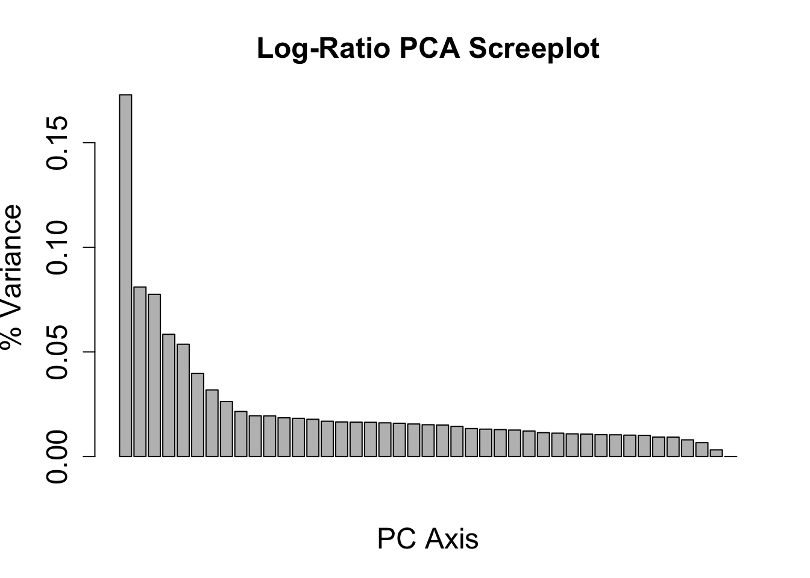
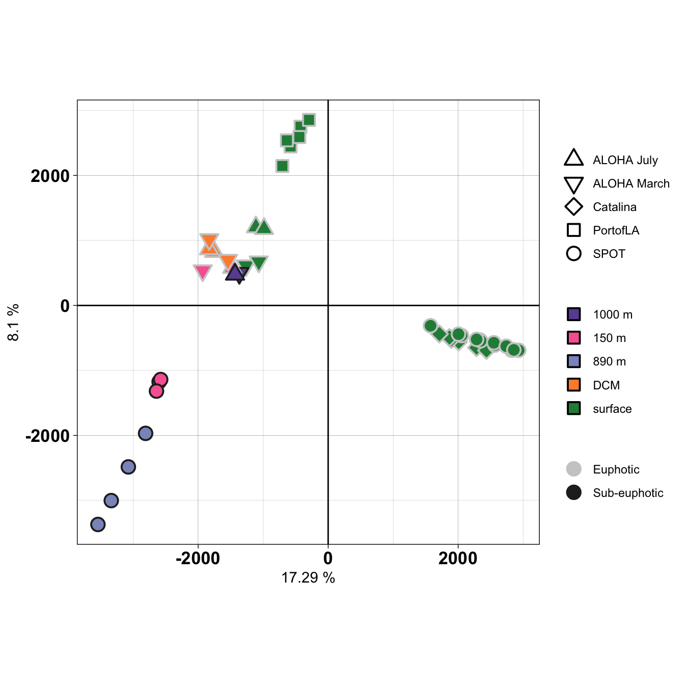
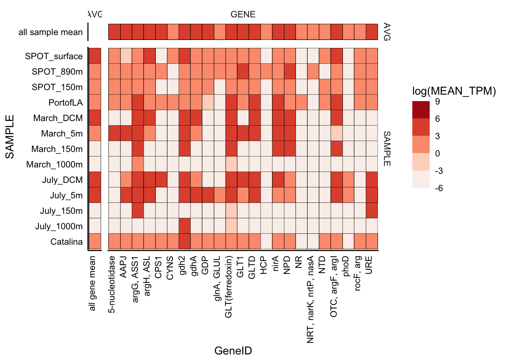

library(tidyverse)
library(data.table)
library(compositions)
library(patchwork)Analysis of metatranscriptome data
Premise
We have taken outputs from eukrhythmic and performed transcript-level normalization so we can do downstream analysis. There are two core questions for this metatranscriptome study that can be subset into untargeted and targeted approaches. Questions stem from previous studies at both the NPSG and sites off of coastal California.
| (1) How does nutrient utilization among euphotic zone phytoplankton vary between coastal California and the NPSG? | (2) Do we see a similar euphotic vs. sub-euphotic shift in the metabolic potential of taxa observed at coastal California and the NPSG? | |
| Untargeted |
|
|
| Targeted | SUBSET only those 4 groups from above. Run the count normalization, then isolate the key genes of interest. What is happening with critical N&P pathways? | SUBSET only those 4 groups from above. Run the count normalization, then isolate the all the key genes of interest. Paying particular attention to phagotrophy-based genes. |
Set up working R environment
Whole community analysis
Below, we will import the averaged (across replicates) and scaled transcript per million (TPM) values so we can look at the overall protistan community structure.
Input all TPM results
Below R objects sourced by first isolating only the eukaryotic transcripts, averaging across replicates, and placing into long format.
# | echo: true
# | eval: false
load(file = "Avg_scaled_tpm_08222023.RData", verbose = T)
taxfxn <- read.csv("TaxonomicAndFunctionalAnnotations.csv")Import metadata as well.
# metadata_tmp <- read.delim("input-data/complete-sample-list.txt", header = TRUE, sep = ",")
# sample_metadata <- read.csv("input-data/sample_table.csv") %>%
# unite(SAMPLE, Sample, Replicate, sep = "_", remove = FALSE) %>%
# select(RUN = SRR, everything()) %>%
# right_join(metadata_tmp)
# write.csv(sample_metadata, file = "input-data/sample-metadata.csv")
sample_metadata_1 <- read.csv("input-data/sample-metadata.csv")
sample_metadata <- sample_metadata_1 %>%
mutate(SAMPLE_MATCH = sub("_[^_]+$", "", SAMPLE))Taxonomic composition & distribution
Evaluate taxonomic diversity and composition across all sites.
# | echo: true
# | eval: false
length(unique(taxfxn$SequenceID))
# 14840771
length(unique(rownames(mean_counts_df)))
# 14737135# | echo: true
# | eval: false
annotated_mean <- dplyr::left_join(mean_counts_df %>%
mutate(SequenceID = rownames(mean_counts_df)),
taxfxn,
by = "SequenceID")
# 14737135-14737693
## 558 were duplicatedRemove the duplicated annotations and make a base taxonomic dataframe for downstream work.
# | echo: true
# | eval: false
tax_plot <- annotated_mean %>%
select(Domain:Species, starts_with("mean"), SequenceID) %>%
distinct()
# dim(tax_plot) #14737624\# | echo: true
# | eval: false
load("input-data/tax_plot_08222023.RData", verbose = TRUE)# | echo: true
# | eval: false
tax_only <- tax_plot %>%
select(-SequenceID) %>%
pivot_longer(cols = starts_with("mean"), names_to = "SAMPLE", values_to = "scaledTPM") %>%
group_by(SAMPLE, Domain, Supergroup, Phylum, Class, Order, Family, Genus, Species) %>%
summarise(SUM_scaledTPM = sum(scaledTPM)) load("input-data/tax_only_08242023.RData", verbose = TRUE)Loading objects:
tax_onlyPlot domain level
Creating plot to see total number and relative abundance of non-eukaryotic hits in the data.
(tax_only %>%
mutate(DOMAIN = str_squish(Domain),
SAMPLE = str_remove(SAMPLE, "mean.")) %>%
group_by(SAMPLE, DOMAIN) %>%
summarise(SUM = sum(SUM_scaledTPM)) %>%
ggplot(aes(x = SAMPLE, y = SUM, fill = DOMAIN)) +
geom_bar(stat = "identity", position = "stack", color = "black")+
theme_linedraw() +
theme(axis.text.x = element_text(angle = 45, vjust = 1, hjust = 1))) /
(tax_only %>%
mutate(DOMAIN = str_squish(Domain),
SAMPLE = str_remove(SAMPLE, "mean.")) %>%
group_by(SAMPLE, DOMAIN) %>%
summarise(SUM = sum(SUM_scaledTPM)) %>%
ggplot(aes(x = SAMPLE, y = SUM, fill = DOMAIN)) +
geom_bar(stat = "identity", position = "fill", color = "black")+
theme_linedraw() +
theme(axis.text.x = element_text(angle = 45, vjust = 1, hjust = 1)))`summarise()` has grouped output by 'SAMPLE'. You can override using the
`.groups` argument.
`summarise()` has grouped output by 'SAMPLE'. You can override using the
`.groups` argument.
Stats on what % of the data are eukaryotic vs. not.
SUM_TOTAL_TPM <- sum(tax_only$SUM_scaledTPM)
tax_only %>%
mutate(DOMAIN = str_squish(Domain),
SAMPLE = str_remove(SAMPLE, "mean.")) %>%
filter(SUM_scaledTPM > 0) %>% # Remove zeroes
group_by(DOMAIN) %>%
summarise(Sum_of_TPM = sum(SUM_scaledTPM),
Perc_of_total = 100*(Sum_of_TPM/SUM_TOTAL_TPM),
.groups = "rowwise")# A tibble: 4 × 3
# Rowwise: DOMAIN
DOMAIN Sum_of_TPM Perc_of_total
<chr> <dbl> <dbl>
1 Archaea 305556. 0.159
2 Bacteria 5438767. 2.84
3 Eukaryota 185858173. 96.9
4 Unclassified 174159. 0.0908 # Count = count(DOMAIN))Plot to supergroup
# head(tax_only)
tax_only %>%
mutate(DOMAIN = str_squish(Domain),
SUPERGROUP = str_squish(Supergroup),
PHYLUM = str_squish(Phylum),
SAMPLE = str_remove(SAMPLE, "mean.")) %>%
filter(DOMAIN == "Eukaryota") %>%
group_by(SAMPLE, Supergroup) %>%
summarise(SUM = sum(SUM_scaledTPM)) %>%
ggplot(aes(x = SAMPLE, y = SUM, fill = Supergroup)) +
geom_bar(stat = "identity", position = "fill", color = "black")+
theme_linedraw() +
theme(axis.text.x = element_text(angle = 45, vjust = 1, hjust = 1))`summarise()` has grouped output by 'SAMPLE'. You can override using the
`.groups` argument.
Tally composition of the supergroup.
colnames(tax_only) [1] "SAMPLE" "Domain" "Supergroup" "Phylum"
[5] "Class" "Order" "Family" "Genus"
[9] "Species" "SUM_scaledTPM"# unique(tax_only$Phylum)
tax_names <- tax_only %>%
mutate(DOMAIN = str_squish(Domain),
SUPERGROUP = str_squish(Supergroup),
PHYLUM = str_squish(Phylum),
SAMPLE = str_remove(SAMPLE, "mean.")) %>%
filter(DOMAIN == "Eukaryota") %>%
select(DOMAIN, SUPERGROUP, Class:Species) %>%
distinct()Adding missing grouping variables: `SAMPLE`, `Domain`, `Supergroup`, `Phylum`unique(tax_names$Phylum) [1] " Apicomplexa" " Ciliophora" " Dinoflagellata"
[4] " Perkinsea" "Unclassified" " Conosa"
[7] " Discosea" " Lobosa" " Chlorophyta"
[10] " Glaucophyta" " Rhodophyta" " Discoba"
[13] " Cryptophyta" " Hacrobia_X" " Haptophyta"
[16] " Choanoflagellida" " Fungi" " Cercozoa"
[19] " Foraminifera" " Ochrophyta" " Opalozoa"
[22] " Sagenista" " Stramenopiles_X" Now, reformat taxonomic information to visualize.
unique(tax_only$SAMPLE) [1] "mean.Catalina" "mean.July_1000m" "mean.July_150m"
[4] "mean.July_5m" "mean.July_DCM" "mean.March_1000m"
[7] "mean.March_150m" "mean.March_5m" "mean.March_DCM"
[10] "mean.PortofLA" "mean.SPOT_150m" "mean.SPOT_890m"
[13] "mean.SPOT_surface"# colnames(tax_only)
# head(sample_metadata)
tax_formatted <- data.frame(tax_only) %>%
# Remove preceding spaces in taxonomic names
mutate(across(c(Domain, Supergroup, Phylum, Class, Order, Family, Genus, Species), ~ as.character(str_squish(.)))) %>%
filter(Domain == "Eukaryota" & SUM_scaledTPM > 0) %>%
mutate(SAMPLE_MATCH = str_remove(SAMPLE, "mean.")) %>%
left_join(sample_metadata, by = "SAMPLE_MATCH") %>%
# Taxonomic group curation
mutate(SUPERGROUP = case_when(
Supergroup == "Alveolata" ~ paste(Supergroup, Phylum, sep = "-"),
TRUE ~ Supergroup
))Warning in left_join(., sample_metadata, by = "SAMPLE_MATCH"): Detected an unexpected many-to-many relationship between `x` and `y`.
ℹ Row 1 of `x` matches multiple rows in `y`.
ℹ Row 13 of `y` matches multiple rows in `x`.
ℹ If a many-to-many relationship is expected, set `relationship =
"many-to-many"` to silence this warning.# head(tax_formatted)Assign levels for taxonomic groups.
tax_order_color<-c("#612741","#b74a70","#b7757c","#eecfbf","#92462f","#bb603c","#dfa837","#ccc050","#33431e","#93b778","#61ac86","#657abb","#1c1949","#8a8d84")
supergroup_order <- (as.character(unique(tax_formatted$SUPERGROUP)))
names(tax_order_color) <- (supergroup_order)Figure 1
tax_formatted %>%
mutate(SUPERGROUP = factor(tax_formatted$SUPERGROUP, levels = supergroup_order)) %>%
group_by(SAMPLE_ID_PARSED, PACIFIC_REGION, LIGHT, DEPTH, SUPERGROUP) %>%
summarise(SUM = sum(SUM_scaledTPM)) %>%
ggplot(aes(x = SAMPLE_ID_PARSED, y = SUM, fill = SUPERGROUP)) +
geom_bar(stat = "identity", position = "fill", color = "black")+
facet_grid(rows = vars(PACIFIC_REGION), scales = "free_y", space = "free") +
scale_fill_manual(values = tax_order_color) +
theme_classic() +
coord_flip() +
theme(axis.text.x = element_text(vjust = 1, hjust = 1)) +
labs(x = "", y = "TPM Relative Abundance")`summarise()` has grouped output by 'SAMPLE_ID_PARSED', 'PACIFIC_REGION',
'LIGHT', 'DEPTH'. You can override using the `.groups` argument.
Table 1
Get stats on what transcripts were annotated to various levels, etc.
This represents a toy dataset to troubleshoot code.
load("input-data/toy_1000.Rdata", verbose = TRUE)
# Change to original names, so code below can be written
annotated_mean <- annotated_mean_10000
df_ctr_norm <- ctr_norm_10000
head(annotated_mean)How many transcripts are annotated?
data.frame(annotated_mean %>%
count(output = KEGG_ko != "-",
name = "KEGGs") %>%
left_join(annotated_mean %>%
count(output = PFAMs != "-",
name = "PFAMs")) %>%
left_join(annotated_mean %>%
count(output = GOs != "-",
name = "GOs")) %>%
left_join(annotated_mean %>%
count(output = (GOs != "-" & PFAMs != "-" & KEGG_ko != "-"),
name = "All"))) %>%
filter(output == TRUE) %>% select(-output) %>%
pivot_longer(cols = everything(), values_to = "Number annotated") %>%
mutate(Percent_annotated = 100*(`Number annotated`/length(annotated_mean$SequenceID)))| DB | Number of seqs annotated | Percent annotated | |
|---|---|---|---|
| KEGGs | 9970784 | 67.7 | |
| PFAMs | 13595566 | 92.3 | |
| GOs | 5442486 | 36.9 | |
| All | 4963542 | 33.7 |
summary_annotated <- annotated_mean %>%
mutate(SUM = rowSums(across(where(is.numeric)))) %>%
select(SUM, GOs, PFAMs, KEGG_ko, Domain, Supergroup)
# write.csv(summary_annotated, file = "summary_of_annotated_totalTPM.csv")
# sum(summary_annotated$SUM) # TPM amount that is annotatedHow many are annotated and have taxonomic IDs?
noneuk <- c("Unclassified", "Bacteria", "Archaea")
as.data.frame(annotated_mean %>%
count(output = !(Domain %in% noneuk),
name = "IDed as Eukaryote") %>%
left_join(annotated_mean %>%
count(output = !(Domain %in% noneuk) & Supergroup != "Unclassified",
name = "Supergroup level")) %>%
left_join(annotated_mean %>%
count(output = !(Domain %in% noneuk) & Class != "Unclassified",
name = "Class level")) %>%
left_join(annotated_mean %>%
count(output = !(Domain %in% noneuk) & Order != "Unclassified",
name = "Order level")) %>%
left_join(annotated_mean %>%
count(output = !(Domain %in% noneuk) & Family != "Unclassified",
name = "Family level")) %>%
left_join(annotated_mean %>%
count(output = !(Domain %in% noneuk) & Genus != "Unclassified",
name = "Genus level")) %>%
left_join(annotated_mean %>%
count(output = !(Domain %in% noneuk) & Species != "Unclassified",
name = "Species level"))) %>%
filter(output == TRUE) %>% select(-output) %>%
pivot_longer(cols = everything(), values_to = "Number annotated") %>%
mutate(Percent_annotated = 100*(`Number annotated`/length(annotated_mean$SequenceID)))Need to run the above on the HPC.
PCoA with whole community functional profile
Ahead of time, normalized community composition data was center scaled. Below, we can import this dataset and perform principle component analysis.
Import normalized center data.
# Run on HPC
load("normed_center_df_08222023.RData", verbose = TRUE)# Run on HPC
pca_lr <- prcomp(as.data.frame(t(df_ctr_norm)))
variance_lr <- (pca_lr$sdev^2)/sum(pca_lr$sdev^2)Import PCA objects from running R on the HPC.
load("input-data/pca_objects.RData", verbose = TRUE)Loading objects:
pca_df
variance_lrDetermine how appropriate the PCoA is in 2 vs 3 dimensions.
barplot(variance_lr, main = "Log-Ratio PCA Screeplot", xlab = "PC Axis", ylab = "% Variance", cex.names = 1.5, cex.axis = 1.5, cex.lab = 1.5, cex.main = 1.5)
pc1 <- round(variance_lr[1] * 100, 2)
pc2 <- round(variance_lr[2] * 100, 2)
# head(sample_metadata)
# svg("Rplot_metat_pca_wholecommunity.svg", width = 7, height = 7)
pca_df %>%
left_join(sample_metadata, by = c("SAMPLE_MATCH" = "SAMPLE")) %>%
mutate(REGION_ORDER = case_when(REGION == "ALOHA" ~ paste("ALOHA", MONTH), TRUE ~ REGION)) %>%
ggplot(aes(x = PC1, y = PC2)) +
geom_jitter(stroke = 1, size = 4, aes(shape = REGION_ORDER, fill = DEPTH_CATEGORY, color = LIGHT)) +
# scale_shape_manual(values = c(21, 22, 23, 24)) +
scale_shape_manual(values = c(24, 25, 23, 22, 21)) +
scale_fill_manual(values = c("#6a51a3", "#f768a1", "#8c96c6", "#fd8d3c", "#238b45")) +
scale_color_manual(values = c("#cccccc", "#252525")) +
theme_linedraw() + coord_fixed(ratio = 1) +
guides(fill = guide_legend(override.aes = list(shape = c(22)))) +
geom_hline(yintercept = 0) + geom_vline(xintercept = 0) +
theme(legend.title = element_blank(),
axis.text = element_text(color = "black", face = "bold", size = 13)) +
labs(x = paste(pc1, "%"), y = paste(pc2, "%"))
Import KEGG IDs
These have been curated.
kegg <- read.csv("../KEGG_DB/combined_kegg.csv")
# head(kegg$KO_number)
curated_kegg <- read.csv("../KEGG_DB/reformat-kegg-pfam-skh.csv")
key_geneid <- curated_kegg %>%
select(-X) %>%
right_join(kegg %>% select(KEGG = KO_number, everything(), -X)) %>%
distinct() %>%
select(starts_with("KeggOrthology_"), Category01, Category02, FullName, GeneID, Gene_identification, KEGG, PFAM, Descriptions, REF = REFs)Joining with `by = join_by(KEGG)`Warning in right_join(., kegg %>% select(KEGG = KO_number, everything(), : Detected an unexpected many-to-many relationship between `x` and `y`.
ℹ Row 1 of `x` matches multiple rows in `y`.
ℹ Row 38 of `y` matches multiple rows in `x`.
ℹ If a many-to-many relationship is expected, set `relationship =
"many-to-many"` to silence this warning.Subset key_geneid dataframe to select what we want from it.
# head(key_geneid)
# unique(key_geneid$KeggOrthology_B)
kegg_ortho_based <- key_geneid %>%
select(KeggOrthology_B, KEGG, GeneID, Gene_identification) %>%
filter(!is.na(KeggOrthology_B)) %>%
distinct()
# dim(key_geneid)
# dim(kegg_ortho_based)
kegg_curated <- key_geneid %>%
select(Category01, Category02, KEGG, GeneID, Gene_identification) %>%
filter(!is.na(Category01)) %>%
distinct()
# dim(kegg_curated)Question 1
How does nutrient utilization among euphotic zone phytoplankton vary between coastal California and the NPSG?
Targeted
Data for targeted sections is imported from process-eukrhythmic-output code titled Curated genes only.
load("input-data/Avg_scaled_tpm_curated_08252023.RData", verbose = TRUE)Loading objects:
counts_curated
sample_merged# load("input-data/normed_center_df_curated_08252023.RData", verbose = TRUE)To address question 1, subset to a curated set of genes.
counts_curated_annot <- counts_curated %>%
mutate(KEGG = str_remove(KEGG_ko, "ko:")) %>%
left_join(kegg_curated)Joining with `by = join_by(KEGG)`Warning in left_join(., kegg_curated): Detected an unexpected many-to-many relationship between `x` and `y`.
ℹ Row 5 of `x` matches multiple rows in `y`.
ℹ Row 277 of `y` matches multiple rows in `x`.
ℹ If a many-to-many relationship is expected, set `relationship =
"many-to-many"` to silence this warning.counts_curated_kegg <- counts_curated %>%
mutate(KEGG = str_remove(KEGG_ko, "ko:")) %>%
left_join(kegg_ortho_based)Joining with `by = join_by(KEGG)`Warning in left_join(., kegg_ortho_based): Detected an unexpected many-to-many relationship between `x` and `y`.
ℹ Row 1 of `x` matches multiple rows in `y`.
ℹ Row 614 of `y` matches multiple rows in `x`.
ℹ If a many-to-many relationship is expected, set `relationship =
"many-to-many"` to silence this warning.unique(counts_curated_annot$Category01)[1] "Gluconeogenesis-glycolysis" "Energy Acquisition"
[3] "Phagotrophy" "Nutrient processing"
[5] "Glyoxylate cycle" "N and P metabolism"
[7] "Carbon fixation" "Photosynthesis"
[9] "Entner-Doudoroff pathway" Planning to subset genes from the N and P metabolism category. Modify input table for downstream visualization.
# min(as.numeric(counts_curated_annot))
n_p_TPM_0 <- counts_curated_annot %>%
filter(Category01 == "N and P metabolism" & Domain == "Eukaryota") %>%
select(starts_with("mean."), Supergroup:Species, Category02, GeneID, Gene_identification, PFAMs) %>%
pivot_longer(cols = starts_with("mean."), names_to = "SAMPLE_tmp", values_to = "TPM") %>%
mutate(SAMPLE = str_remove(SAMPLE_tmp, "mean."))
# head(n_p_TPM_0)
min_TPM <- min((n_p_TPM_0 %>% filter(TPM>0))$TPM)
# log(min_TPM)
n_p_TPM_1 <- n_p_TPM_0 %>%
mutate(TAXA = case_when(
Phylum == "Dinoflagellata" ~ "Dinoflagellate",
Phylum == "Ciliophora" ~ "Ciliate",
Phylum == "Haptophyta" ~ "Haptophyte",
Phylum == "Chlorophyta" ~ "Chlorophyte",
Class == "Bacillariophyta" ~ "Diatom",
Supergroup == "Rhizaria" ~ "Rhizaria",
TRUE ~ "Else")) %>%
select(TAXA, SAMPLE, Category02, GeneID, Gene_identification, PFAMs, TPM) %>%
filter(TAXA != "Else") %>%
mutate(TPM_mod = case_when(
TPM == 0 ~ min_TPM,
TRUE ~ TPM))
# Changed 0 for TPM to be the minimum
# length(unique(n_p_TPM_1$GeneID)) # 24 total genes
n_p_TPM_meanSAMPLE <- n_p_TPM_1 %>%
group_by(TAXA, Category02, GeneID, Gene_identification, PFAMs, TPM_mod) %>%
summarise(MEAN_TPM = mean(TPM_mod)) %>%
add_column(SAMPLE = "all sample mean")`summarise()` has grouped output by 'TAXA', 'Category02', 'GeneID',
'Gene_identification', 'PFAMs'. You can override using the `.groups` argument.n_p_TPM_meanGeneID <- n_p_TPM_1 %>%
group_by(TAXA, Category02, SAMPLE, Gene_identification, PFAMs, TPM_mod) %>%
summarise(MEAN_TPM = mean(TPM_mod)) %>%
add_column(GeneID = "all gene mean")`summarise()` has grouped output by 'TAXA', 'Category02', 'SAMPLE',
'Gene_identification', 'PFAMs'. You can override using the `.groups` argument.n_p_TPM_df <- n_p_TPM_1 %>%
group_by(TAXA, Category02, SAMPLE, GeneID, Gene_identification, PFAMs, TPM_mod) %>%
summarise(MEAN_TPM = mean(TPM_mod)) %>%
rbind(n_p_TPM_meanSAMPLE) %>%
rbind(n_p_TPM_meanGeneID) %>%
mutate(FACET_SAMPLE = case_when(
SAMPLE == "all sample mean" ~ "AVG",
TRUE ~ "SAMPLE"
),
FACET_GENE = case_when(
GeneID == "all gene mean" ~ "AVG",
TRUE ~ "GENE"
)) `summarise()` has grouped output by 'TAXA', 'Category02', 'SAMPLE', 'GeneID',
'Gene_identification', 'PFAMs'. You can override using the `.groups` argument.reds <- c("#f7f7f7","#fee5d9", "#fcae91", "#fb6a4a", "#a50f15")
unique(n_p_TPM_df$TAXA)[1] "Chlorophyte" "Ciliate" "Diatom" "Dinoflagellate"
[5] "Haptophyte" "Rhizaria" n_p_TPM_df %>%
filter(TAXA == "Diatom") %>%
ggplot(aes(x = SAMPLE, y = GeneID, fill = log(MEAN_TPM))) +
geom_tile(stat = "identity", color = "black") +
scale_fill_stepsn(
# limits = c(-5,5),
# breaks = c(0.0, 3.5, 7.0, 10.5),
show.limits = TRUE,
colors = reds) +
coord_flip() +
theme_classic() +
facet_grid(cols = vars(FACET_GENE), rows = vars(FACET_SAMPLE), space = "free", scales = "free") +
# labs(x = "", y = "TPM Relative Abundance") +
# scale_x_discrete(position = "top") +
theme(axis.text.x = element_text(angle = 90, vjust = 0, hjust = 1, color = "black"),
strip.background = element_blank(),
panel.border = element_blank(),
axis.text.y = element_text(color = "black"),
axis.ticks = element_blank(),
panel.grid = element_blank())
Untargeted
load("/scratch/group/hu-lab/pacocean-metaT/Robjs/euphotic_by_taxa.RData")https://introtogenomics.readthedocs.io/en/latest/2021.11.11.DeseqTutorial.html
Fold change is calculated from a ratio of normalised read counts between two conditions of interest. However, level of gene expression changes are often shown as log2 fold change. Using log2 value become particularly helpful for visualising the gene expression changes. Furthermore, it eventually become intuitive that log2FC of 1 means expression level double in a given condition, and a negative log2FC means the gene is down-regulated in a given condition.
p-value of 0.05 means there is a 5% chance that the difference observed is due to chance (false-positive)
# Plot log fold change
data.frame(res_hapto) %>%
mutate(REGULATION = case_when(
log2FoldChange > 0 ~ "upregulated in CA",
log2FoldChange < 0 ~ "upregulated in NPSG"
),
SIGNIFICANT = case_when(
pvalue <= 0.05 ~ "Significantly",
TRUE ~ "Not significantly"
)) %>%
ggplot(aes(x = baseMean, y = log2FoldChange, color = SIGNIFICANT)) +
geom_point(stat = "identity") +
scale_x_log10() +
theme_classic() +
scale_color_manual(values = c("#878787", "#d73027")) +
labs(title = mcols(res_hapto)$description[2])# Get table
hapto_transcripts <- data.frame(res_hapto) %>%
mutate(REGULATION = case_when(
log2FoldChange > 0 ~ "upregulated in CA",
log2FoldChange < 0 ~ "upregulated in NPSG"
),
SIGNIFICANT = case_when(
pvalue <= 0.05 ~ "Significantly",
TRUE ~ "Not significantly"
)) %>%
filter(SIGNIFICANT == "Significantly") %>%
rownames_to_column(var = "SequenceID") %>%
mutate(TAXA = "Haptophyte")Question 2
Targeted
counts_curated_annot %>%
filter(Category01 == "Phagotrophy" & Domain == "Eukaryota") %>%
select(starts_with("mean."), Supergroup:Species, Category02, GeneID, Gene_identification, PFAMs) %>%
pivot_longer(cols = starts_with("mean."), names_to = "SAMPLE_tmp", values_to = "TPM") %>%
mutate(SAMPLE = str_remove(SAMPLE_tmp, "mean."),
LOG_TPM = log(TPM)) %>%
ggplot(aes(x = Phylum, y = GeneID, fill = LOG_TPM)) +
geom_tile()Untargeted
Session info
sessionInfo()R version 4.3.0 (2023-04-21)
Platform: x86_64-apple-darwin20 (64-bit)
Running under: macOS Ventura 13.1
Matrix products: default
BLAS: /Library/Frameworks/R.framework/Versions/4.3-x86_64/Resources/lib/libRblas.0.dylib
LAPACK: /Library/Frameworks/R.framework/Versions/4.3-x86_64/Resources/lib/libRlapack.dylib; LAPACK version 3.11.0
locale:
[1] en_US.UTF-8/en_US.UTF-8/en_US.UTF-8/C/en_US.UTF-8/en_US.UTF-8
time zone: America/Chicago
tzcode source: internal
attached base packages:
[1] stats graphics grDevices utils datasets methods base
other attached packages:
[1] patchwork_1.1.2 compositions_2.0-6 data.table_1.14.8 lubridate_1.9.2
[5] forcats_1.0.0 stringr_1.5.0 dplyr_1.1.2 purrr_1.0.1
[9] readr_2.1.4 tidyr_1.3.0 tibble_3.2.1 ggplot2_3.4.2
[13] tidyverse_2.0.0
loaded via a namespace (and not attached):
[1] tensorA_0.36.2 utf8_1.2.3 generics_0.1.3 robustbase_0.95-1
[5] stringi_1.7.12 hms_1.1.3 digest_0.6.31 magrittr_2.0.3
[9] evaluate_0.21 grid_4.3.0 timechange_0.2.0 bayesm_3.1-5
[13] fastmap_1.1.1 jsonlite_1.8.5 fansi_1.0.4 scales_1.2.1
[17] cli_3.6.1 rlang_1.1.1 munsell_0.5.0 withr_2.5.0
[21] yaml_2.3.7 tools_4.3.0 tzdb_0.4.0 colorspace_2.1-0
[25] vctrs_0.6.2 R6_2.5.1 lifecycle_1.0.3 htmlwidgets_1.6.2
[29] MASS_7.3-60 pkgconfig_2.0.3 pillar_1.9.0 gtable_0.3.3
[33] glue_1.6.2 Rcpp_1.0.10 DEoptimR_1.0-13 xfun_0.39
[37] tidyselect_1.2.0 rstudioapi_0.14 knitr_1.43 farver_2.1.1
[41] htmltools_0.5.5 labeling_0.4.2 rmarkdown_2.22 compiler_4.3.0